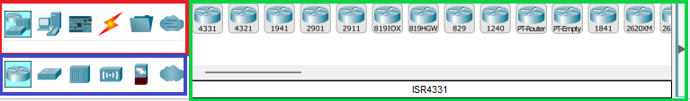

PERIPHERIQUES
Sur Cisco Packet Tracer, il y a une section de peripheriques où nous pouvons ajouter des périphériques à notre topologie réseau. Nous pouvons choisir parmi une variété de périphériques tels que des routeurs, des switch etc... Le choix des peripheriques se fait dans le bandeau inferieur gauche de l'interface de cisco packet tracer comme vous pouvez le voir ici. Encadré en rouge, vous pouvez retrouver ici les catégories de périphériques disponibles. En cliquant sur une catégorie, vous pouvez voir les types de périphériques (Encadré en bleu). Sur la droite, encadré en vert, vous pouvez choisir un élément précis à ajouter dans l'infrastructure réseau en le faisant glisser dans la zone de travail.
LES "NETWORK DEVICES"
Les "Network Devices" sont des équipements qui permettent de connecter plusieurs appareils au sein d'un réseau. Ils incluent des routeurs, des switch et des points d'accès sans fil.
LES "END DEVICES"
Les "End Devices" sont les appareils finaux qui se connectent au réseau, tels que les ordinateurs, les imprimantes et les téléphones IP.